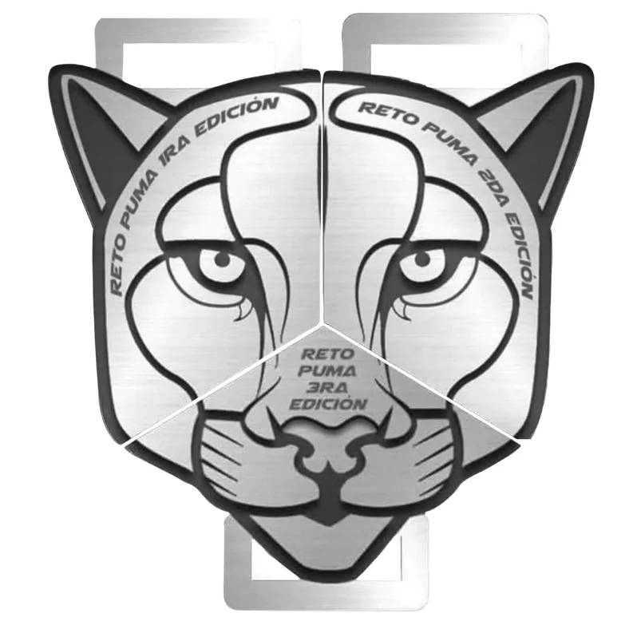

Memoria de la rodada
Lleva el territorio contigo.
La colección reúne el jersey de la edición y los objetos que guardan cada kilómetro recorrido.

Jersey de la edición
El uniforme del territorio puma.
Consulta la disponibilidad y elige entre las tallas XS a 3XL. El apartado se coordina directamente con el comité.
XSSMLXL2XL3XL
Ediciones anteriores
Objetos que también rodaron.
